Smaller album of photographs featuring Georgennea Brown and Gerald Renshaw. These photos may have been taken in Canada, perhaps in the days before and/or after Georgennea and Gerald were married.
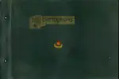
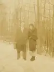
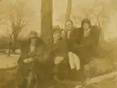
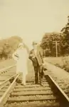
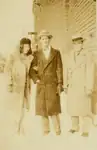
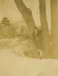
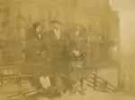
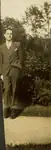
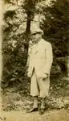
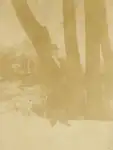
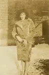
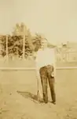
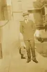
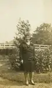
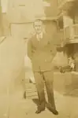
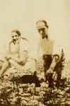
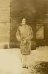
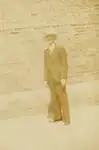
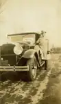
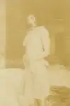
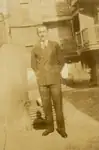
24 photos available in this directory.